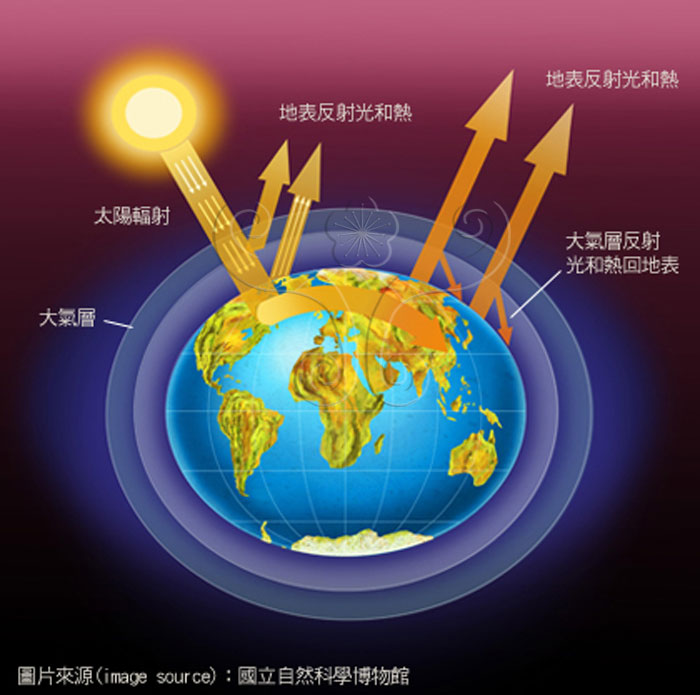
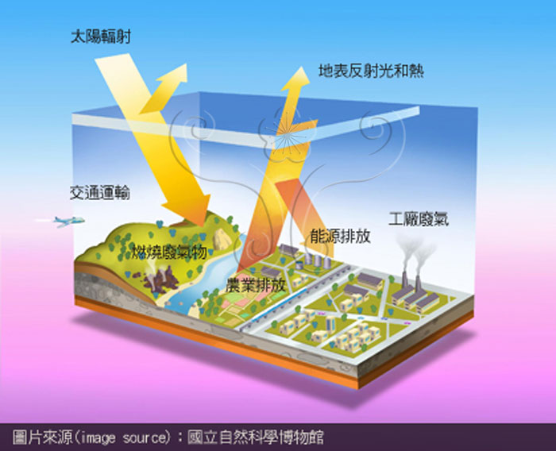
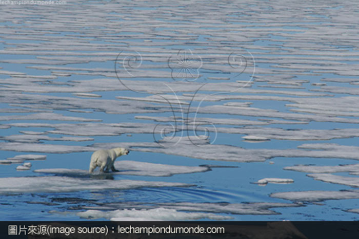

-

地球仔暖化个因由?
地球仔暖化影響地球仔係全面性个，其著盡明顯个就係感受到溫度个擐高，但做麼介溫度會擐高，這與地球仔个「溫室效應」息息相關，一般來說總愛有大氣棧个星球仔就會有溫室效應，適當个溫室效應，讓地球仔維持在一合適生物生存个溫度，撿採溫室效應過高，地球仔整體溫度上升，造成地球仔暖化。
read more » -

麼介係溫室效應?
溫室效應就像係在農業著輒分用來維持空間溫度个溫室，地球仔大氣棧就如溫室个塑膠布，將地球仔包圍成一個溫室，當日頭光輻射經過大氣棧到地表，部份光摎熝會反射回忒空，此時大氣棧有兜氣體會吸收這兜光摎熝，並反射回地球仔表面，讓地球仔保持在定著个溫度。而大氣棧著會吸收光摎熝个氣體，𠊎兜就稱作「溫室氣體」。
-

北極熊个危機!
近幾年來𠊎兜輒會看著電視、報章雜誌報導有關北極熊因地球仔暖化，造成其生活環境个改變，使著北極熊个生存面對了當大个威脅，地球仔暖化，地球仔北極氣溫毋斷上升，造成北極海洋冰棧融化，對於北極熊个生存帶來當大个危機，包含：生活範圍縮細、食物變少，獵食毋易。
read more »